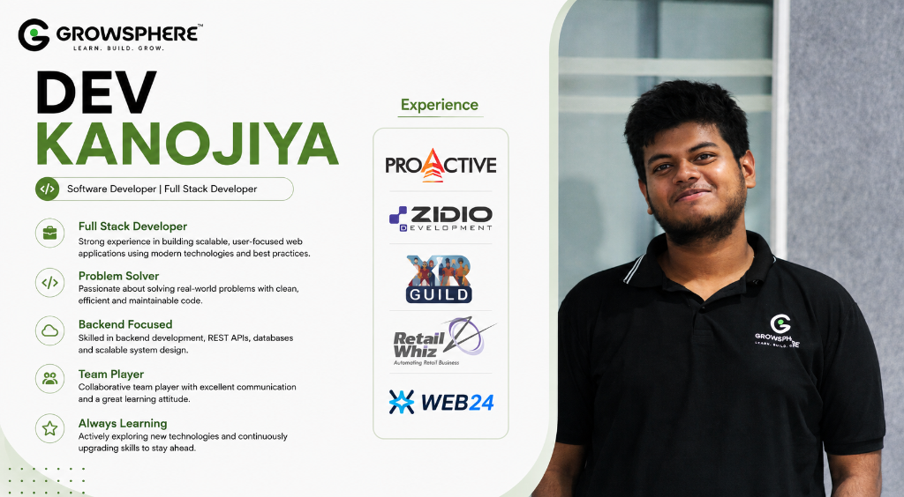

AI RESEARCH AGENT 🧠⚡
A progressive journey from web fundamentals to autonomous multi-agent research.
Before we build an AI agent, let's understand the app.
An AI application is still an application. It starts with an interface on a user's screen.
Upload your document (PDF, TXT)
What does the browser actually do?
The browser takes text files and turns them into visual, clickable software on your screen.
"The browser is an execution engine. It parses text files line-by-line and renders a graphical interface you can interact with."
The three building blocks of the web
Every interface on the internet is built from three foundational tools.
STRUCTURE
"What exists on the page?"
Defines headings, upload boxes, text inputs, and buttons.
STYLE
"How does it look & feel?"
Defines spacing, typography, colors, dark mode, and layouts.
BEHAVIOR
"What does it do?"
Handles clicks, communicates with AI servers, and updates the screen.
HTML = Structure
HTML defines the raw elements and items that exist on a webpage.
The Blueprint of the Web
"HTML is like the structural frame of a building. It defines what exists, but not how it looks."
You don't need to memorize dozens of HTML tags. Just understand that HTML creates the boxes that hold content.
CSS = Appearance & Layout
CSS transforms raw wireframes into usable, beautifully styled software.
The CSS Polish Formula
Structure + Spacing + Typography + Colors + Layout
"CSS makes the interface usable, accessible, and visually understandable."
JavaScript = Behavior
JavaScript allows the page to respond to user actions and talk to external servers.
Event triggered
Sends API request
Screen updates live
"Without JavaScript, a button is just a picture on screen. JavaScript connects button clicks to real actions."
But real applications get big very quickly.
What happens when your AI app has 8 different interactive features?
One Giant 3,000-Line HTML File
- Header & Navigation
- Upload Dropzone & Progress
- Document List & Delete Buttons
- Search Bar & Question Input
- Streamed Answer Card
- Citations & Source Links
The Modular Solution
"Don't build one giant unmaintainable page. Break your UI into reusable Lego blocks!"
React = Build UI from components
Instead of building one giant page, React lets us build reusable, isolated pieces.
The Component Tree Hierarchy
├── <Header /> // Logo, title, session timer
├── <UploadZone /> // Drag & drop PDF files
├── <DocumentList /> // Shows active indexed documents
├── <QuestionInput /> // Query text box & submit button
├── <AnswerCard /> // Streamed AI text
└── <CitationList /> // Page numbers & verified web links
"Each component is isolated. If you fix the Upload component, you never break the Answer component!"
What is a component?
A component is a reusable, self-contained piece of user interface.
<Header />
App brand & stats
<Upload />
File dropzone
<Question />
Input & submit
<Answer />
Result & sources
"Combine small components together like Lego blocks, and you get a complete, resilient web application."
React has State (The UI's Memory)
State is information that the interface remembers as the user interacts.
State Update in Action
Real State Examples in Our AI App:
You don't need to know React hooks or syntax right now. Just remember: State = The UI's memory.
Now we have a frontend. Where does the work happen?
The browser looks great, but it cannot run AI models or search documents on its own.
"The browser is just a window. To connect to AI and private files, we need a Backend!"
The frontend cannot do everything
Why secret API keys and heavy AI logic must never live inside the browser.
What React Wants to Do:
- Search 50MB PDF documents
- Call Groq LLM inference
- Search the live web with Tavily
- Query vector embeddings
Why It Can't Live in Browser:
"The browser is completely public. Never put secret API keys or private databases in frontend code."
What is an API? The Restaurant Analogy
An API is the secure bridge between different parts of an application.
"An API is a bridge. The customer doesn't enter the kitchen to cook; the waiter carries orders back and forth safely."
Request → Response (JSON)
How frontend and backend communicate using structured JSON data packets.
{
"question": "What is RAG?"
}{
"answer": "RAG retrieves private facts..."
}Meet FastAPI
FastAPI is the high-performance Python framework we use to build our backend API.
Our first complete AI application
How all pieces connect from the user's click to the model's answer.
Types query
Captures text
Calls model
Infers text
Renders screen
"Critical Question: What happens if the LLM doesn't know our private PDF?"
Meet the LLM (Large Language Model)
A model trained on vast internet text that can understand and generate language.
"The catch: The LLM does NOT automatically know your private company documents or research notes."
The 100-Page Document Problem
Why we can't just paste an entire 100-page PDF into the LLM prompt.
Models have strict token limits. 100 pages will overflow the prompt.
Sending 200,000 tokens on every question burns dollars quickly.
Processing 100 pages takes 20+ seconds before output starts.
LLMs miss details in the middle and make up believable lies.
Find only the top 3 relevant paragraphs.
Sub-second answers with exact page citations.
The Solution: RAG (Retrieval-Augmented Generation)
The open-book exam technique for guaranteed factual accuracy.
"RAG = An open-book exam. Instead of forcing the AI to guess from memory, hand it the exact textbook page before it answers!"
How RAG works in 6 steps
From raw document to semantic lookup and final grounded response.
"Next Question: How do we search documents by meaning instead of exact keywords?"
Why can't we just search keywords?
Keyword matching fails when humans use synonyms and related ideas.
"How can I make my application faster?"
DOCUMENT SENTENCE"Response-time optimization reduces latency."
Zero matching words! Keyword search finds nothing.
We Need Semantic Search
"The words are different, but the meaning is identical. We must search by mathematical meaning."
What is an embedding? Meaning into numbers
Computers don't understand words; they understand multi-dimensional coordinates.
[ 0.21, -0.43, 0.82, ..., 0.11 ]Core Law of Embeddings
"Embeddings represent human meaning as numbers in multi-dimensional space."
Vector Search in 2D Space
Similar meaning leads to similar representation and instant retrieval.
"RAG Question"
Distance: 0.95 • "Document about retrieval"
Distance: 0.92 • "Document about embeddings"
"Pizza Recipe"
Distance: 0.04 • "Football Match"
Meet ChromaDB: The Vector Database
Where we store embeddings and execute blazing-fast similarity searches.
"ChromaDB stores millions of vector embeddings locally and performs cosine similarity in under 5 milliseconds."
What if the answer isn't in the PDF?
What happens when the user asks about today's live news or competitor pricing?
"What's happening in AI today?"
The static PDF on your laptop was created last month. It cannot possibly know what happened this morning.
We Need Live Web Search
"When private documents are not enough, the AI must reach out to the live internet in real time."
Give the AI tools to act
Tools allow the AI application to interact with external systems.
ChromaDB
Search private uploaded documents
Tavily Web Search
Real-time search engine built for AI
Python Calculator
Exact arithmetic and statistics
"Meet Tavily: A search engine created specifically for AI agents to retrieve clean markdown facts in real time."
LLM vs RAG vs AI Agent
Understanding the 3 evolutionary stages of modern AI applications.
LLM
Generates an answer
Relies purely on fixed training memory.
RAG
Retrieves information
Searches private documents before answering.
AI AGENT
Decides what to do
Dynamically picks tools and self-corrects.
What makes an agent? The Decision Cycle
An agent doesn't follow a hardcoded script; it evaluates results and decides its next move.
"Notice the key word: DECISION. The agent chooses which tool to call based on the user's specific intent."
Now we have a workflow
Complex research requires multi-step orchestration with branching and evaluation.
"This is a workflow. To build reliable stateful workflows in Python, we use LangGraph."
LangGraph = State + Nodes + Edges
LangGraph lets us represent stateful multi-step AI systems as clean graphs.
Memory
A shared dictionary that tracks question, retrieved facts, and answers.
Functions
Python functions that perform real work (retrieve, search, generate).
Pathways
Connections that decide where the workflow moves next.
Nodes: The work units
A node is a Python function that performs a specific task in the graph.
Analyze Question
Search Documents
Search Web
Evaluate Results
Generate Answer
Edges: Connecting the steps
An edge connects one node to the next, passing the shared state forward.
"Edges define how data flows through your system in a clean, reproducible graph."
Conditional Edges: The Decision Router
The workflow makes a dynamic decision about where to go next.
"The router inspects the question. If it asks for company data → ChromaDB. If it asks for today's news → Tavily."
The Self-Correcting Retry Loop
Why LangGraph cyclic workflows make AI systems robust and reliable.
Guardrail: Max Retries
"We set max_retries = 2 so the agent self-corrects without getting stuck in an infinite loop."
Put everything together: The Master Blueprint
This is the complete system you now understand and will build today.
The entire journey in 4 clear levels
Every technology introduced today answers a specific, concrete problem.
Build the Interface
HTML → CSS → JavaScript → React
Connect the App
REST API → JSON → FastAPI
Give AI Knowledge
LLM → RAG → Embeddings → ChromaDB
Give Capabilities
Tools → Agents → LangGraph
You understand the entire architecture.
Every file, library, and endpoint you write in the next hour will make complete sense.
LET'S BUILD THE AI RESEARCH AGENT 🚀
Our 11-step practical implementation sequence for today's coding session.
Python venv
Server scaffold
Chunking logic
Gemini vectors
Vector index
State & nodes
Live web tool
Llama-3 model
Components
SSE tokens
Live Q&A
"A seed today, a forest tomorrow. Let's open our laptops and build!"